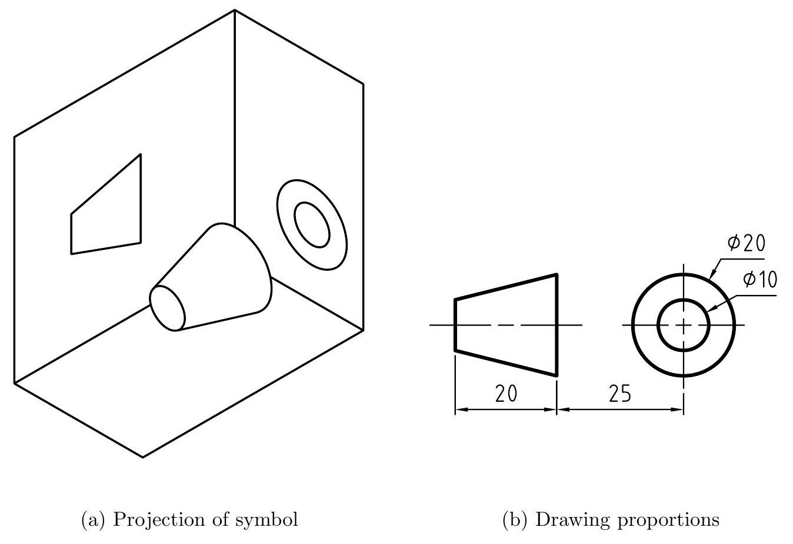
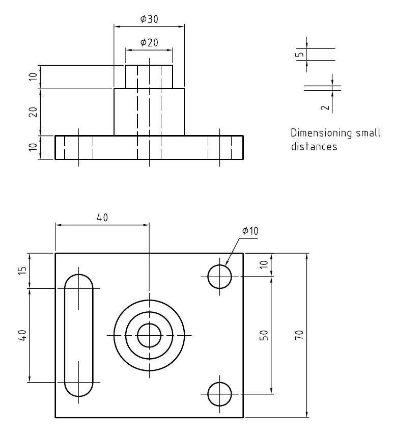

Chapter 2
Orthographic Projection
2.1 Introduction
A view of an object is known technically as a projection. Orthographic projection is a system of drawing views of an object using perpendicular projectors from the object to the projection plane. The object is positioned in such a way that the principal face is parallel to the projection plane. The projected view describes the exact shape of the object as seen in a specified direction. There are three planes for an orthographic projection:
- Frontal plane - plane on which the front view is projected.
- Horizontal plane - plane on which the top or bottom view is projected.
- profile plane - plane on which the end view is projected.
Once the views are projected onto the respective planes, the planes are opened out so that they lie on the same plane. This produces a number of separate two-dimensional inter-related views which represent faces that are mutually at right angles to each other. Several views of an object can therefore be shown simultaneously on a single drawing paper.
Figure 2.1 shows how views of an object are obtained by using projectors. If the planes of projection are parallel to the principal faces of the object, they form a glass box. Note that the object has three principal dimensions: width, height and depth. These are fixed terms used for dimensions in these directions regardless of the shape of the object. Since it is required to show the views of a solid or 3D object on flat sheet of paper, it is necessary to unfold the planes so that they all lie in the same plane. Since the glass box has six sides, we can have six views of the object as shown in figure 2.2.
Figure 2.1: Projection of views on a glass box.
Figure 2.2: Unfolded planes.
2.2 Visualizing the Views
The mental process of reading a reading a drawing in order to obtain the views is known as visualizing the views. Figure 2.3 shows the process of visualization.
Figure 2.3: Visualization
2.3 Types of Orthographic Projections
Orthographic projection uses two main principle planes of projection; the frontal plane and the vertical plane. These planes intersect to produce four quadrants or angles as shown in figure 2.4. The object to be drawn is imagine to be placed in one of these quadrants and orthographic views of it are projected onto these planes. In practice, only the first and third angles are used since views in the second and fourth quadrants may overlap.
Figure 2.4: Principal planes of projection
2.3.1 First Angle Orthographic Projection
Figure 2.5 shows an object positioned in the First quadrant. Views of the have been drawn on the plane using projectors. The view on the frontal plane is called the elevation, that on the horizontal plane the plan and that on the profile plane the end view, end elevation or side elevation. The observer always looks through the object and to the planes of projection. To obtain the views, the horizontal and profile planes are opened out (or rabatted) about the line of intersection with the profile plane.
Figure 2.5: First angle orthographic projection
2.3.2 Third Angle Orthographic Projection
This is done by positioning the object in the third quadrant and projecting the views onto the planes as shown in figure 2.6. Since the planes now come between the observer and the object, they are imagined to be transparent and the object is viewed through them. The views are the same in both systems and the only ultimate difference between the two systems is the arrangement of the views.
Figure 2.6: Third angle orthographic projection
2.3.3 Projection Symbols
Since two systems of projection, $1^{\text {st }}$ and $3^{r d}$ angle are approved internationally, it is necessary to indicate on the drawing which system has been used. This is done by a symbol consisting of the an elevation and end view of a frustum of a cone. This symbols are shown in figures 2.5 and 2.6.
Figure 2.7: First angle projection symbol
Figure 2.8: Third angle projection symbol
Figure 2.9: Block to be projected
Figure 2.10: First angle projection
2.3.4 Comparison between First and Third Angle Projections
It may not be necessary to show all the six views to completely describe an object. Two views are sometimes enough to completely describe an object. This convention is particularly applied to symmetrical objects with less features. If a view does not shows any additional features to the first two views, it should be excluded. If only two views are necessary and the top view and right side view are equally descriptive, the combination chosen is that which spaces best on the paper.
2.3.5 Two View Mechanical Drawing
Figure 2.11: Third angle Projection
View selection guidelines
- The principle views should be chosen to show the most detail of the object and with the least number of hidden lines.
- The most descriptive view should be selected as the front view
- Build up all the views together by projecting measurements from one view to another.
- Always allow enough space between the views on a drawing to accommodate dimensions and notes without crowding. $C \geq 15 \mathrm{~mm}$.
Figure 2.12 shows orthographic views of a object that requires only two views to completely define the object.
2.3.6 Three View Mechanical Drawing
Most components require at least three views (a front view, top view and an end view) to completely describe them.
Figure 2.12: 2- view orthographic drawing of a support arm
Exercise
Figure 2.13 shows an anchor bracket used in a ship. Draw in first angle orthographic projection, a front view as seen from direction A, an end view as seen from direction B and a top view. Show the projection symbol.
Figure 2.13: Anchor bracket
Figure 2.14: Views of figure 2.13
2.4 Dimensioning
An engineering drawing must be properly dimensioned in order to convey the designers intent to the end user. Dimensions provide the information needed to specify the size and location of every feature on the object. A properly dimensioned drawing helps ensure that the part produced in the manufacturing phase matches the part you asked for. There are a few simple guidelines to be followed when dimensioning a drawing and these guidelines cover the majority of cases you will encounter. Before we can begin to go over the rules for dimensioning, we must learn a little bit about the anatomy of a dimension. Figure 2.15 shows a dimensioned view of an object.
Figure 2.15: The anatomy of a dimension 2.15
2.4.1 Guidelines for Dimensioning
- Dimensions should be placed outside the outline of the view wherever possible. This is achieved by drawing projection or extension lines from points or lines on the view and placing a dimension line between them. There should be a small gap between the outline and the start of the extension line and the extension line should continue a short distance beyond the dimension line. The dimension line has arrow heads about 3 mm long at each end and should touch the extension line or other limiting line.
- The dimension line which is nearest to the outline should be about 10 mm from it if possible and succeeding dimensions should be well spaced for clarity.
- The dimension should be applied in the view that provides the best description of the feature being dimensioned. For example, holes should be dimensioned in a view where they appear round. A slot should be dimensioned in a view where the contour of the slot is visible. Apply dimensions in a view where the feature appears true size.
- Place larger dimensions towards the outside so that extension lines dont cross dimension lines.
- Do not over-dimension. Each feature should be dimensioned once and only once.
- Use the diameter dimension to specify the size of holes and cylinders. Precede the dimension with the diameter symbol, $\phi$.
- Use the radius to dimension an arc. The radius dimension is preceded by the symbol, R. A leader line is commonly used for diameters and radii. The leader line should be a radial line directed through the center of the arc or circle
- Concentric circles should be dimensioned in a longitudinal view (figure 2.15).
- Use the times symbol, $\times$, to indicate repeated dimensions or features.
- Dimensions should be arranged such that they can be read from the bottom of the drawing or from the right hand end of the drawing.
2.5 Drawing scales
Most drawings are made to full size, but if the size of an object makes it impossible to draw to full size, it can be drawn in proportion, that is to a uniform scale. The ratio of reduction or enlargement often depends upon the relative sizes of the object and of the sheet of paper upon which the drawing is to be made. Scales can be classified into 5:
- metric scale - the primary unit of measurement for engineering drawings is millimeter (mm)
- engineers scale - the engineers scale is graduated in units of one inch divided into $10,20,30$, 40, 50, and 60 parts.
- decimal scale - on the full scale, one inch is divided into fiftieths of an inch, or 0.02 .
- mechanical engineers scale - mechanical engineers scales are divided into units representing inches to full size, half size, quarter size or eighth size.
- architects scale - is primarily intended for drawing buildings, piping systems, and other large structures which must be drawn to a reduced scale to fit on a sheet of paper.
The scale used must be stated on the drawing as a ratio for example 1:2 which means half full size and each division on a metric scale equals 2 mm with the calibration numbering at 20-unit intervals. Drawings can also be drawn in an enlarged form for example $2: 1$ which means the drawing has been drawn twice the full size. Scale multipliers and divisors of 2,5 and 10 are recommended for most commonly used scales eg.
- 1:1 full size
- 1:2 half full size
- 1:5 one-fifth full size
- 1:10 one-tenth full size
- 2:1 twice full size
- 5:1 five times full size
- 10:1 10 times full size.
2.7 True Lengths
It is important to be able to find the true length of a line in some aspects of Engineering Drawing, particularly in the development, or laying out in a plane, of sheet metals. In orthographic projection, the projection of a line will only show its true length if the line is parallel to the plane on which it is projected. When a line is not parallel to one of the normal planes of projection, two methods may be used to find its true length:
Exercise
Referring to figure 2.17, A is on the frontal plane, B is on the profile plane and C is on the horizontal plane. Find the true lengths of the lines AB and BC and the true distance AC . Also find the true inclinations of $\mathrm{AB}, \mathrm{BC}$ and AC to the horizontal plane. Use first angle projection.
Figure 2.17: True length of a line
1. Revolution method
The line may be moved until it is parallel to a principle plane, or an auxiliary plane may be used which is parallel to the plan or elevation of the line. On the plan (figure 2.18), End A of the line is held stationary and end B is revolved until the line is parallel to the vertical plane. In one view, B moves along a circle while in the other, it moves along a straight line. There are two positions of the circle depending on the direction of rotation of B.
2. Triangulation Method
To find the true length by triangulation, the plan length A'C' of the line is set off at right angles to the difference in vertical heights of the ends of the line in elevation. The hypotenuse A" $\mathrm{C}^{\prime}$ of the right angled triangle formed is the true length of the line
True length of AB and BC by revolution
True length of AC by Triangulation.
Figure 2.18: True length of a line